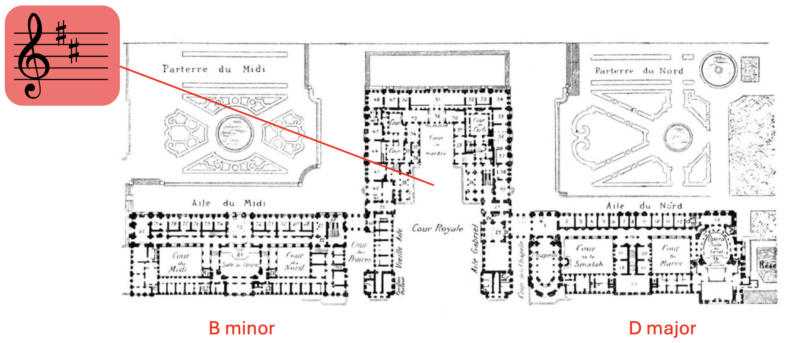
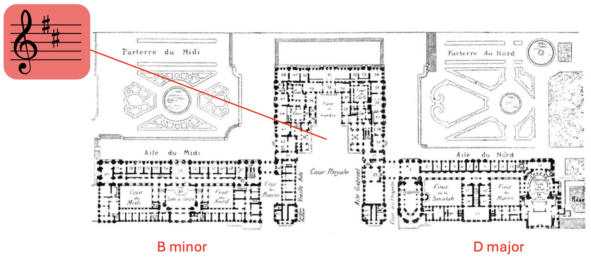
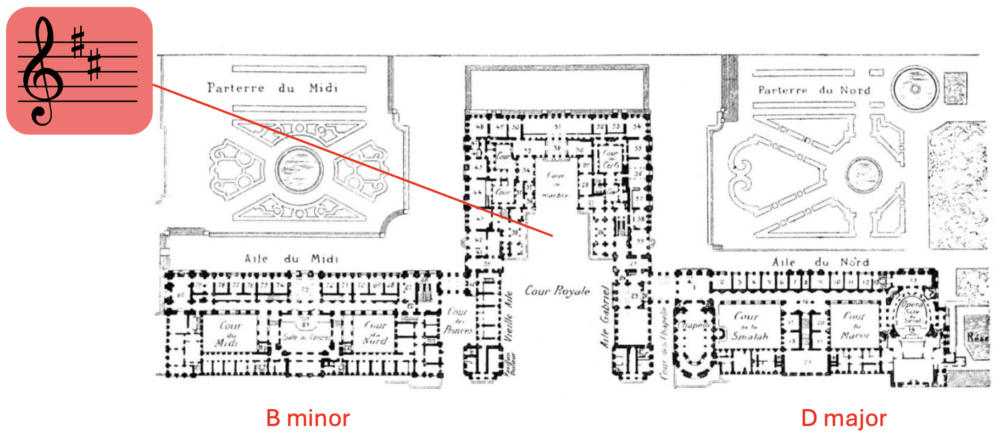
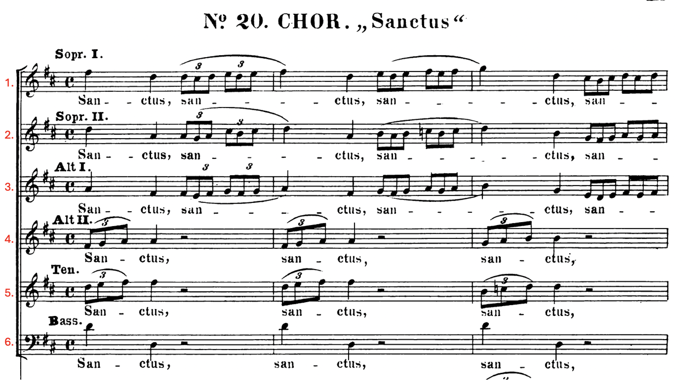

Bach B Minor Mass

J.S. Bach portrait
Order of the B Minor Mass
- Kyrie [Kyrie I, Christe Eleison, Kyrie II]
- Gloria
- Credo
- Sanctus
- Osanna, Benedictus, Agnus Dei, Dona Nobis Pacem
Palace of Versailles
 

J.S. Bach portrait
- Kyrie [Kyrie I, Christe Eleison, Kyrie II]
- Gloria
- Credo
- Sanctus
- Osanna, Benedictus, Agnus Dei, Dona Nobis Pacem



Gregorian Chant


Metaphor to Isaiah's prophecy of Seraphim with 6-wings each.
To continue presenting monumental works of Classical Music in an aesthetically pleasing and informative way!